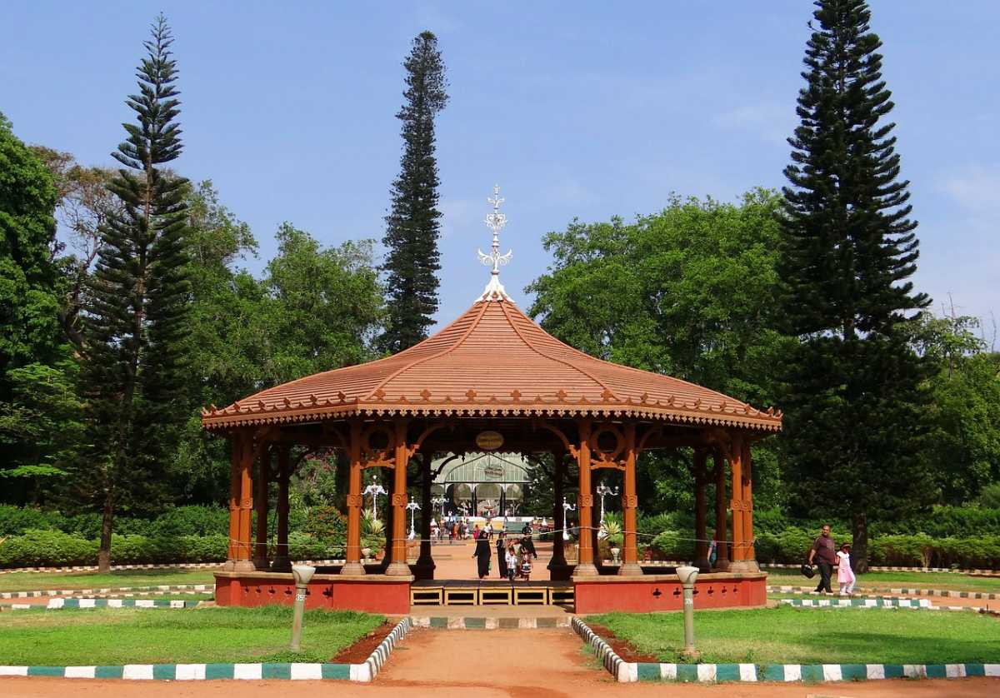

Lalbagh is one of Bengaluru’s major attractions. A sprawling garden situated in a 240 acres piece of land in the heart of the city, Lalbagh houses India’s largest collection of tropical plants and sub-tropical plants, including trees that are several centuries old. Exhibits like the Snow White and the seven dwarfs, and a topiary park, an expansive lake, a beautiful glasshouse modelled around the Crystal Palace in London adorn the park giving it a surrealistic atmosphere. A watchtower perched on top of a 3000 million years old rocky outcrop (which is a National Geological Monument), built by Kempegowda, the founder of Bengaluru also adorns the picturesque garden.
 Cubbon Park in the city of Bangalore is a major sightseeing attraction rich in green foliage. It is a green belt region of the city and is an ideal place for nature lovers and those seeking a calm atmosphere. Having been laid down by Lord Cubbon, the park is named so in his honour. It is home to more than 6,000 trees that support a vibrant ecosystem. In addition to being a natural sightseeing destination, some of the major structures of the city such as the Attara Kacheri, Cubbon Park Museum and Sheshadri Iyer Memorial Park are also situated here. Another famous attraction in the Cubbon Park is The Bangalore Aquarium, which is the second largest aquarium in India. Cubbon Park was originally spread over 100 acres, which was later extended to 300 acres. First established in the year 1870 by Sri John Meade (acting Commissioner of Mysore), Cubbon Park has a long history. Initially, the park was called "Meade's Park" and later came to be known as the Cubbon park